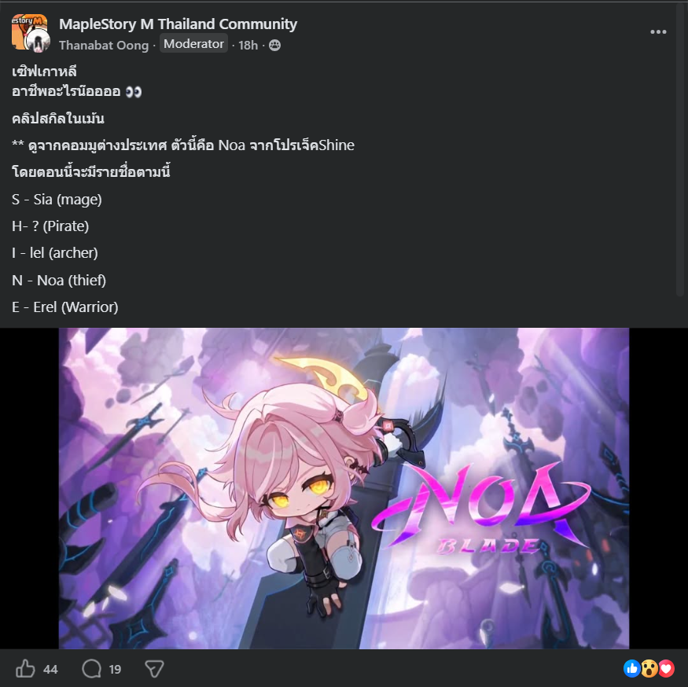
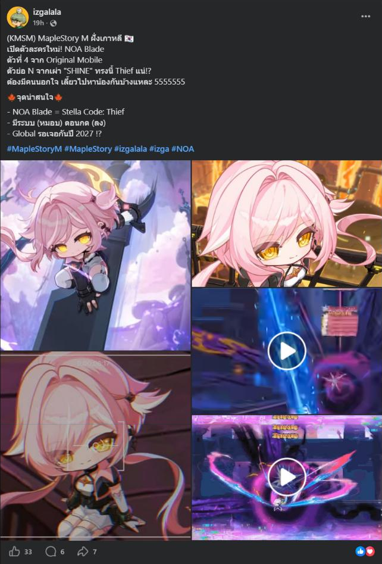
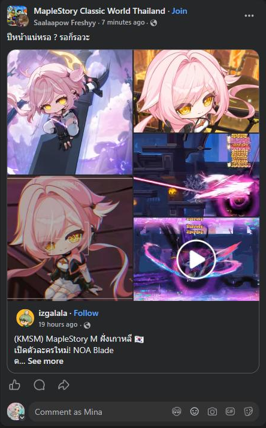
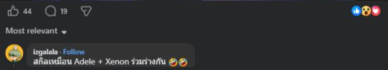

ค้นใน Facebook (ล็อกอินแล้ว), Instagram, TikTok และ YouTube ณ 26 พ.ย. 2026 — เจอ 2 โพสต์หลัก (กลุ่ม MapleStory M Thailand Community และเพจ izgalala) + การแชร์ต่อไปกลุ่ม MapleStory Classic World Thailand

T
Thanabat Oong โพสต์ในกลุ่ม
แอดมินกลุ่ม MapleStory M Thailand Community · 25 พ.ย. 2026
เซิฟเกาหลี อาชีพอะไรน๊ออออ คลิปสกิลในเม้น
👍 44 reactions💬 19 คอมเมนต์
แชร์ข่าวเปิดตัว Noa จากฝั่งเกาหลี และอธิบายว่า Noa อยู่ใน โปรเจกต์ Shine (S-Sia · H-? · I-Iel · N-Noa · E-Erel)
ดูโพสต์ต้นฉบับ ↗
i
izgalala KOL candidate
เพจครีเอเตอร์เกม · โพสต์ 25 พ.ย. 2026
(KMSM) MapleStory M ฝั่งเกาหลี เปิดตัวละครใหม่! NOA Blade — ตัวที่ 4 จาก Original Mobile · ตัวย่อ N จากเผ่า “SHINE” ทรงนี้ Thief แน่!?
👍 33 reactions💬 6 คอมเมนต์↗ 7 แชร์
จุดน่าสนใจที่เขาสรุป: NOA Blade = Stella Code: Thief · มีระบบหมอบตอนกดลง · “Global รอเจอกันปี 2027 !?” · แนบภาพ 4 รูป + คลิป 2 คลิปจาก PV
ถูกแชร์ต่อ: Saalaapow Freshyy แชร์โพสต์นี้ไปที่กลุ่ม
MapleStory Classic World Thailand พร้อมแคปชัน “ปีหน้าแน่หรอ ? รอก็รอวะ” (26 พ.ย.) — มีคนจากฝั่ง Classic สนใจด้วย

ดูโพสต์ต้นฉบับ ↗YouTube (ไทย)ยังไม่มีคลิปภาษาไทยเรื่อง Noa
TikTokไม่เจอโพสต์เรื่อง Noa ทั้งไทย/เกาหลี (#노아블레이드 ยังไม่มี)
Instagramไม่เจอโพสต์เรื่อง Noa (#노아블레이드 ยังไม่มีโพสต์)
X (Twitter)ต้องล็อกอินจึงค้นได้ — ยังไม่ได้ตรวจ
คอมเมนต์ใต้ PV ทางการยังไม่มีคอมเมนต์ภาษาไทย
คอมเมนต์
สกิลเหมือน Adele + Xenon ร่วมร่างกัน
คอมเมนต์อันดับแรก (Most relevant) · ครีเอเตอร์ในรายชื่อ KOL ใหม่
กลุ่ม Shine คลาส Warrior
ไล่ไลน์อัปตัวละครโปรเจกต์ Shine · มีคนตอบกลับ 5 รายการโจรเถิดพลีสสส
อยากให้ Noa เป็นสาย Thiefแจกอาวุธอาชีพหน่อยยยคับ … เหมือนจะใช้ chain โซ่แน่เลย
เดาอาวุธจากภาพถือมีดแบบนี้ สายซับแน่นอนครับ
เดาประเภทอาวุธ / ตำแหน่งการเล่นดูจากการจับด้ามอาวุธผมทายว่า สายมีด หน้าจะเป็นโจร
เดาว่าเป็น Thief จากท่าถืออาวุธก้มโชว์ไปที
คอมเมนต์ขำ ๆ เรื่องท่าทางใน key visual